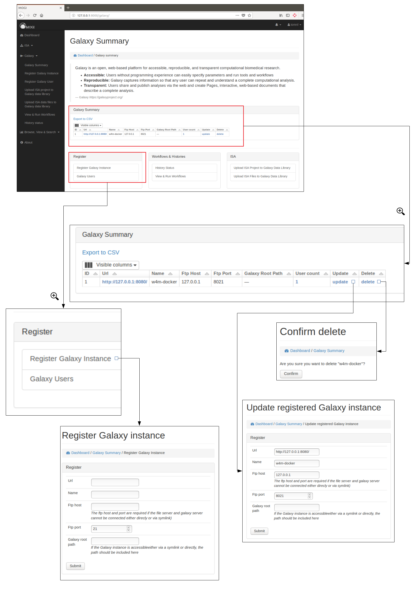
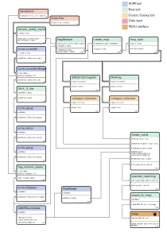

Interact with Galaxy¶
The functionality is summarised at http://127.0.0.1:8000/galaxy/
Register Galaxy details¶
Register Galaxy instance¶
A Galaxy instance needs to be registered before any of the django-galaxy functionality can be used. If the Galaxy instance is accessible directly via the files system of a symbolic link on the file system then a the root of the Galaxy path should be included when registering. Alternatively the FTP site for the Galaxy instance can be recorded.
Register Galaxy user¶
Each MOGI user (e.g. Django user) can be registered to any of the registered Galaxy instance. The API key that has is provided by the user allows permission of the Galaxy instance API to be used.

Upload ISA projects to Galaxy data library¶
If a ISA project has be created and data has been uploaded into an assay. This data can be uploaded into the Galaxy Data libraries. If the Galaxy instance is on the same file system (or accessible by a symbolic link) then the files can be uploaded as symbolic links. This is useful if there is limited space available for Galaxy instance. Alternatively the files can be uploaded via FTP.

Run Workflows¶
All workflows for each Galaxy instances can be synced with MOGI (Django) so they can be run directly from the MOGI interface. If any new Galaxy workflow has been added to an instance make sure the sync button is pressed.

Once the data files have been uploaded onto a Galaxy instance (see section Upload ISA projects to Galaxy data library. The files will be visible when a user chooses to perform a workflow. The relevant files can be filtered based on what protocol or sample was used. A samplelist is automatically when an ISA project is uploaded into the Galaxy data libraries. This can be useful if a samplelist is needed for the data analysis.

LC-MS(/MS) annotation workflow and importing data to MOGI¶
An LC-MS(/MS) annotation workflow is provided within the mogi docker. The worklfow performs various data processing and annotation steps and generates an SQLite database containing all the relevant peak and annotation information. The final step of the workflow allows this SQLite database to be exported to the MOGI database.
More details to come!